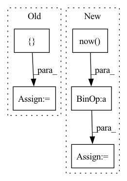

Pattern ID :5108
Before Change
print(object_info)
timeout = int(object_info.get("timeout", 60 * 60 * 24 * 3))
clusters = conf.get("CLUSTERS",{} )
for cluster_name in clusters:
cluster = clusters[cluster_name]
k8s_client = K8s(cluster["KUBECONFIG"])After Change
with session_scope(nullpool=True) as dbsession:
// 删除vscode的pod
try:
alert_time = datetime.datetime.now() - datetime.timedelta(seconds=timeout) + datetime.timedelta(days=1)
notebooks = dbsession.query(Notebook).filter(Notebook.changed_on < alert_time).all() // 需要删除或者需要通知续期的notebook
for notebook in notebooks:
if notebook.changed_on < (datetime.datetime.now() - datetime.timedelta(seconds=timeout)):In pattern: SUPERPATTERN
Frequency: 3
Non-data size: 5
Instances Fragment ID: 17966994
Project Name: tencentmusic/cube-studio
Commit Name: 842a46a1832379aade515f448e0763d7b1cf0194
Time: 2021-10-14
Author: pengluan@tencent.com
File Name: myapp/tasks/schedules.py
M Class Name: AnonimousClass
N Class Name: AnonimousClass
M Method Name: delete_notebook(1)
N Method Name: delete_notebook(1)
M Parent Class:
N Parent Class:
M File Name: myapp/tasks/schedules.py
N File Name: myapp/tasks/schedules.py
M Start Line: 323
M End Line: 348
N Start Line: 322
N End Line: 345
Before Change
Base class for all models.
def __init__(self, device):
self.logger = {}
self.model = None
if device is None:
self.device = torch.device(After Change
// get the current time to append to the dir name,
// so you can use the same tb_file_saving_path for multiple running
time_now = datetime.now() .__format__("%Y-%m-%d_T%H:%M:%S")
// the actual directory name to save the tensorboard file
actual_tb_saving_dir_name = "tensorboard_" + time_now
actual_tb_file_saving_path = os.path.join(
tb_file_saving_path, actual_tb_saving_dir_name
)
os.makedirs(actual_tb_saving_dir_name) // create the dir for file saving Fragment ID: 17967024
Project Name: wenjiedu/pypots
Commit Name: e88739056a8b63464495b60d7144748f8baa7908
Time: 2023-04-07
Author: wenjay.du@gmail.com
File Name: pypots/base.py
M Class Name: BaseModel
N Class Name: BaseModel
M Method Name: __init__(3)
N Method Name: __init__(2)
M Parent Class: ABC
N Parent Class: ABC
M File Name: pypots/base.py
N File Name: pypots/base.py
M Start Line: 20
M End Line: 21
N Start Line: 33
N End Line: 77
Before Change
self.model.train()
train_losses = []
train_accuracies = []
for i, batch in tqdm(enumerate(self.train_loader)):
src_input, tar_input, tar_output, encoder_mask, decoder_mask = batch
After Change
train_losses.append(loss.item())
end_time = datetime.datetime.now()
training_time = end_time - start_time
minutes = training_time.seconds // 60
seconds = training_time.seconds
mean_train_loss = np.mean(train_losses)
print(f"//////////////////////////////////////// Epoch: {epoch} ////////////////////////////////////////")
print(f"Train loss: {mean_train_loss} || Training time: {minutes}mins {seconds}secs")
summary.add_scalar("loss/train_loss", mean_train_loss, epoch)
if mean_train_loss < best_loss:
if not os.path.exists(ckpt_dir):
os.mkdir(ckpt_dir)
torch.save(self.model.state_dict(), f"{ckpt_dir}/best_model.pth")
print(f"Current best model is saved.")
best_loss = mean_train_loss
total_training_time += training_time
hours = total_training_time.seconds // 3600
minutes = total_training_time.seconds // 60
Fragment ID: 17967008
Project Name: devjwsong/transformer-translator-pytorch
Commit Name: d377a69e76dcfd79366898a32ea36adf101422ee
Time: 2020-04-30
Author: enflwodn@gmail.com
File Name: src/main.py
M Class Name: Manager
N Class Name: Manager
M Method Name: train(1)
N Method Name: train(1)
M Parent Class:
N Parent Class:
M File Name: src/main.py
N File Name: src/main.py
M Start Line: 61
M End Line: 113
N Start Line: 59
N End Line: 108